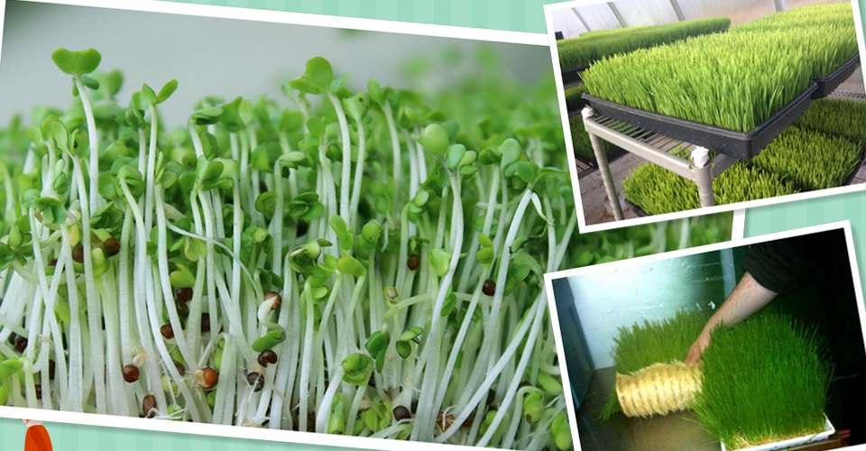

除按传统工艺加入千分之一的植物来源乳酸外，不添加任何其它东西，更不加水。
完全遵循有机食品生产准则
因为各国政府对“有机食品”的规定不同，因此VEGUS不能在其产品上标注“有机食品”。但是VEGUS的哲学是完全遵从公认的有机食品生产准则，包括：1）精选认证过的非转基因有机种子；2） 只使用认证过的有机肥料；3）保证列出所有产品组成；4）只使用安全温和的自然洗涤剂清理设备；5）最重要的特别浓浓的爱心照看。

无污染水基种植嫩芽
虽然VEGUS农庄坐拥优良种植环境，但对于生长迅速的西兰花嫩芽和小麦草，VEGUS均使用水基种植方法。种子在精心配制的无污染全面有机营养液里面生长，恒温室精确控制光照时间、生长温度和湿度，从而为嫩芽提供最佳生长条件，并能最大限度避免土壤种植带来的重金属以及微生物污染 。
生产遵循GMP规则并获美国FDA注册
VEGUSGMP”特别注重在生产过程中实施对产品质量与卫生安全的管理制度，设置了严格的危害分析重要管制点计划（Hazard Analysis and Critical Control Points，HACCP），确保加工系統流程的食品安全；并遵循药物生产级别的GMP标准（Good Manufacturing Practice 即“优良制造标准”），确保产品质量。Vegus在美国药物和食品管理局（FDA）的食品生产商登记号为16589399150、低酸预包装食品LA/CF生产商登记号为 FCE26370。
环境保护
VEGUS特别关注环境保护，不用于榨汁的嫩芽和小麦草的根部，都送到附近牧场，那里的牛儿们天天都要吃，根本停不下来！
世界很大，爱尔兰很远；那里的山青，那里的水秀。